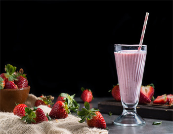
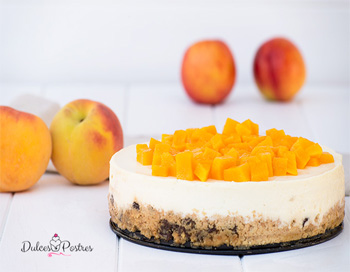
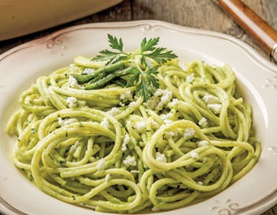
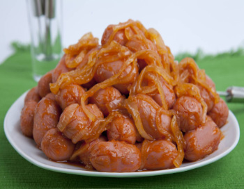
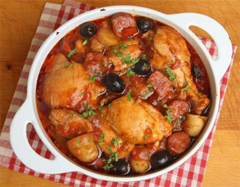

POSTRES FRIOS

Batido de Fresa
IR A LA RECETA..
POSTRES FRIOS

Tarta de melocoton y queso
IR A LA RECETA..
PLATO FUERTE

Spaggetii verde
IR A LA RECETA..
PLATO FUERTE

salchichas endiabladas
IR A LA RECETA..
COMIDA
Chilaquiles
IR A LA RECETA..
COMIDA

Estofado de pollo
IR A LA RECETA..